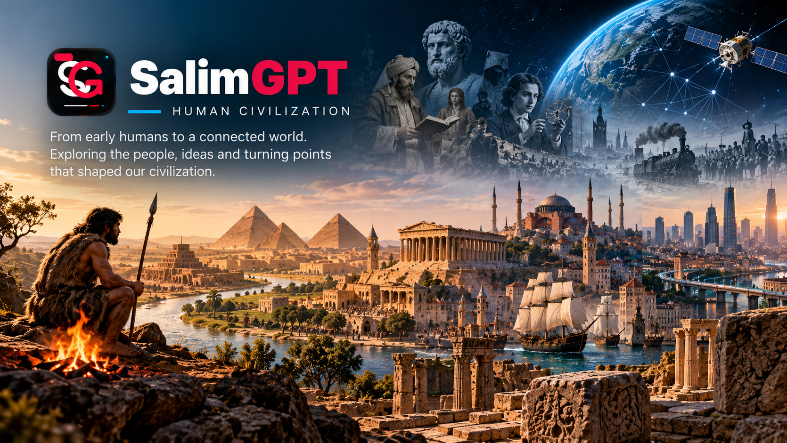

Settlements & Cities
Villages, cities, urban development, architecture and the changing environments in which human communities organize life.
DOCUMENTARY TOPIC
Explore how human communities developed into complex societies, built settlements and institutions, created knowledge and culture, exchanged ideas and resources, adapted to environments and transformed the ways people live together.
Human Civilization is a broad discovery gateway rather than a fixed historical period or list of civilizations. A SalimGPT documentary may examine thousands of years of human development or focus deeply on one settlement, object, social practice, institution, technology, exchange network or highly specific question.
UNDERSTANDING HUMAN DEVELOPMENT
Documentary research on civilization can examine large-scale patterns across centuries or focus on one place, practice, invention, institution or historical transition. The areas below are examples rather than a complete classification.
Villages, cities, urban development, architecture and the changing environments in which human communities organize life.
Language, beliefs, customs, art, knowledge, traditions and ideas that communities develop and transmit across generations.
Systems of administration, law, education, economy, governance and other institutions through which societies organize collective life.
Writing, education, mathematics, science, record-keeping and the ways knowledge is created, preserved and shared.
Movement of people, goods, knowledge, technologies and cultural influences between communities and regions.
One artifact, settlement, route, social practice, institution or narrowly defined question can become the basis of a complete documentary.
NOT LIMITED TO THESE AREAS
These examples support discovery, but they do not define the limits of SalimGPT's documentary work. A subject may involve a major civilization, a small community, an overlooked cultural practice, a single archaeological question, a technological transition, a local institution or another specific aspect of human development.

EVIDENCE, CONTEXT & INTERPRETATION
Documentary research on human civilization may draw from archaeology, historical records, material evidence, academic research, maps, inscriptions, demographic information, scientific analysis and other sources relevant to the subject.
Evidence from different periods and disciplines can vary in completeness and interpretation. SalimGPT therefore aims to distinguish documented evidence from scholarly interpretation, disputed claims and questions that remain unresolved.
INTERCONNECTED SUBJECTS
Human societies change through interacting forces: environment, population, knowledge, technology, institutions, culture, conflict, cooperation, migration and exchange can all become relevant to understanding a particular civilization or period.
For that reason, a Human Civilization documentary may naturally overlap with History, Society, Science, Technology, Investigations or another subject that provides necessary context.
MULTILINGUAL DISCOVERY
Documentary availability and localized presentation may differ between SalimGPT language editions.
মানবসভ্যতা, সমাজ ও মানব বিকাশের বিভিন্ন বিষয় নিয়ে বাংলা ডকুমেন্টারি দেখুন।
Explore documentary subjects about human civilization and development in English.
मानव सभ्यता, समाज और मानव विकास से जुड़े विषयों पर हिन्दी डॉक्यूमेंट्री देखें।